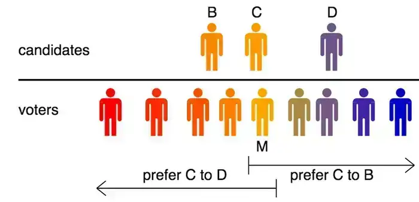
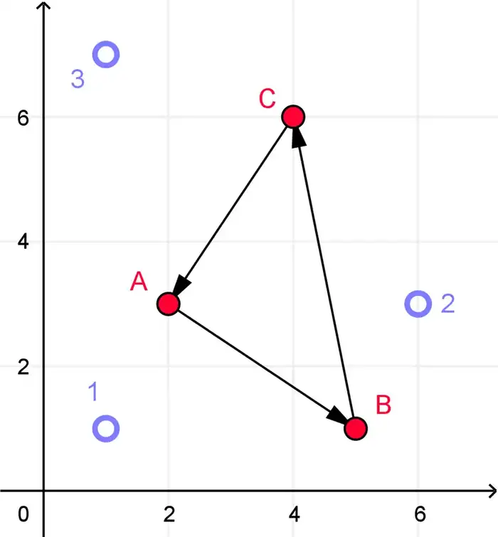

The result
Assume voters have single-peaked preferences along one dimension — each has a most-preferred point and prefers options closer to it. Assume two parties, each wanting to win, and full turnout. Then both parties locate at the median voter's ideal point, because any other position can be beaten by moving toward the median.
Maps, diagrams and images




The logic is spatial and it is robust within its assumptions: it does not require voters to be informed, only to have preferences of the right shape, and it does not require parties to care about policy at all.
Black proved the underlying majority-rule result; Downs drew out the party-competition implication. Together they produced the textbook expectation that two-party systems converge on the centre.
Where the assumptions break
Multidimensionality destroys it. With two or more issues, majority rule generally has no equilibrium at all — the chaos results of McKelvey and Schofield — unless preferences are restricted in ways real electorates do not satisfy.
Turnout and primaries change who the median voter is. If a party's candidate is chosen by a low-turnout primary electorate, the relevant median is that electorate's, not the general election's, and the two can be far apart.
Abstention is the third break: if mobilising your base is more effective than persuading the centre, a party can profit by moving away from the median. That is a strategic calculation, not an error.
Convergence happens in low-salience elections and in systems with closed primaries and high turnout — the theorem's conditions.
Divergence happens where polarisation is asymmetric and where the parties' supporters are geographically sorted, which is a structural change the model has no room for.
The theorem is still useful as a baseline: it tells you which deviations need explaining, and the explanations — primaries, turnout, sorting, multidimensionality — are all testable.
The archive labels this live debate because the mathematics is settled under its assumptions and the empirical fit is contested, and the two are often confused in commentary.
Why it is in the archive
Because it is a precise, provable claim whose failure in the world is much more informative than a vague assertion that politicians chase the centre.
Related: rational choice voting, democratic peace.
Sources for this page
- Wikipedia, “Median voter theorem” — the result and its assumptionsen.wikipedia.org
- Black (1948), Journal of Political Economy — “On the Rationale of Group Decision-making”doi.org
- Wikipedia, “McKelvey–Schofield chaos theorem” — what multidimensionality doesen.wikipedia.org
- Wikipedia, “Political polarization” — the trend the theorem does not predicten.wikipedia.org
Open resources on this topic
- PapersOpen-access articles: DOAJ · PubMed Central · Internet Archive Scholar
- BooksPublic-domain and borrowable copies: Open Library · Project Gutenberg · Google Books · Internet Archive
More images
Cite this page
Momin, S. (2026). The Median Voter Theorem. The Larger World Archive. https://drsamonline.github.io/LARGE_GLOBE/median-voter-theorem.htmlMomin, Sohil. “The Median Voter Theorem.” The Larger World Archive, 2026, https://drsamonline.github.io/LARGE_GLOBE/median-voter-theorem.html.Momin, Sohil. “The Median Voter Theorem.” The Larger World Archive, 2026. https://drsamonline.github.io/LARGE_GLOBE/median-voter-theorem.html.@misc{the2026median,
author = {Momin, Sohil},
title = {The Median Voter Theorem},
year = {2026},
howpublished = {The Larger World Archive},
url = {https://drsamonline.github.io/LARGE_GLOBE/median-voter-theorem.html},
note = {Last reviewed 20 November 2026}
}Last reviewed 20 November 2026 · Corrections policy · this page is not peer reviewed